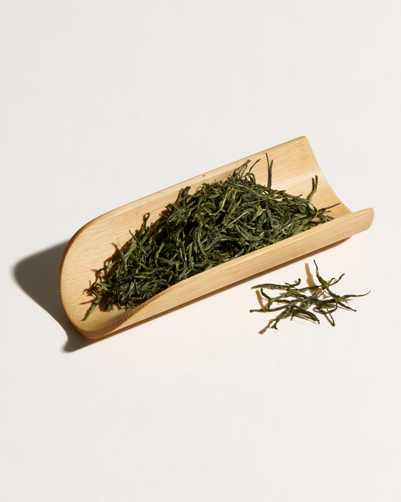
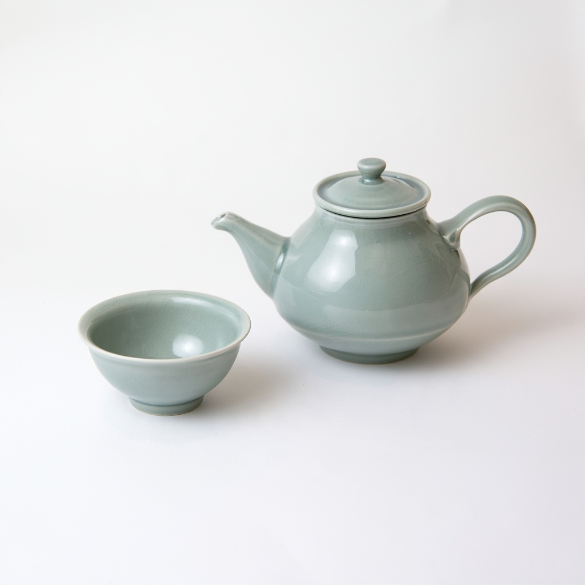

작은 마음을 건네는 일.
기꺼이 시간을 내어 주고 싶은 사람을 위한 선물. 새집을 찾는 날에도, 느긋한 방문에도, 그저 생각났다는 말을 건네고 싶은 날에도.

쓸모 있는 것에
마음을 담아.
선물은 누군가의 하루에 스며듭니다. 차와 사물을 소박하게 구성하고 단정하게 포장해, 건네는 마음이 먼저 보이도록 합니다.
청자 찻잔 두 개와 종이 봉지에 담은 잎차. 함께 열고 나누기 좋은 작은 시작입니다.

새로운 시작에
새로운 곳에서 만나는 익숙한 찻잔.

느긋한 방문에
함께 열고 나눌 수 있는 것.

매일의 곁에
쓸모와 표정이 있는 사물.